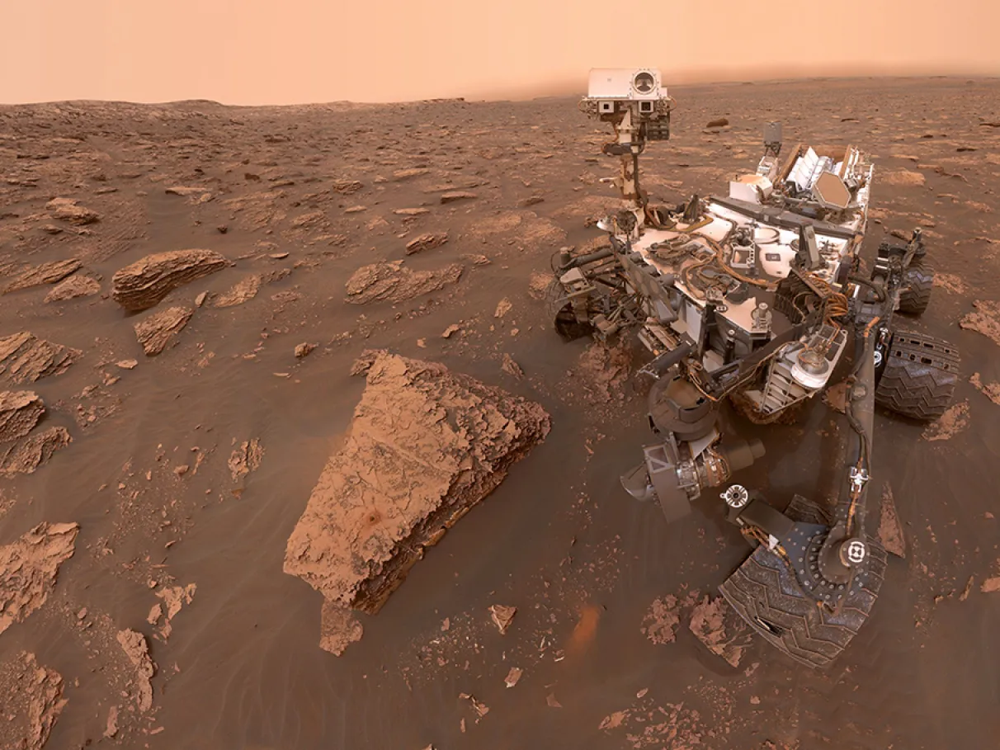

Inicio
Que essa noite de segunda-feira, você possa descansar e recarregar suas energia para um novo desafio de amanhã. Aproveite cada momento!📈
.png)
Cada manhã é uma nova oportunidade para sermos felizes.
Tecnologia👨💻
Microsoft e a Samsung podem estar se unindo em uma aposta no metaverso.

A Microsoft está se preparando para um possível retorno ao mercado de dispositivos de realidade mista, em uma colaboração com a Samsung. De acordo com informações do site coreano The Elec, a empresa encomendou monitores de micro OLED da Samsung para desenvolver "dispositivos de realidade mista de próxima geração", com lançamento previsto para 2026. Essa movimentação surge após um período de reestruturação na divisão de realidade mista da Microsoft, que enfrentou desafios significativos, incluindo cortes de equipe e o fim do suporte ao Windows Mixed Reality.
Os novos headsets da Microsoft, diferentemente do HoloLens, que era voltado para produtividade, devem focar em proporcionar experiências de consumo de conteúdo. Essa mudança de estratégia pode sinalizar uma tentativa da Microsoft de se reposicionar no mercado, especialmente em resposta aos movimentos de concorrentes como Apple, Google e Meta, que também estão investindo em tecnologias de realidade aumentada e virtual.
A Apple, por exemplo, está desenvolvendo um modelo mais acessível do Vision Pro, previsto para ser lançado no final de 2025, enquanto Google e Samsung planejam revelar suas plataformas de headsets ainda este ano. A Meta, por sua vez, está programada para lançar o Quest 4 e o Quest Pro 2 em 2026 e 2027, respectivamente.
Se confirmadas as informações sobre a colaboração entre Microsoft e Samsung, isso poderá representar uma nova era para a realidade mista, com a Microsoft buscando recuperar sua posição em um mercado cada vez mais competitivo.
SAÚDE🧬
Ministério da Saúde orienta farmácias sobre testes rápidos de HIV e hepatites

O Ministério da Saúde emitiu orientações às farmácias sobre a realização de testes rápidos para detecção de HIV e hepatites virais. Essa iniciativa visa ampliar o acesso a esses exames e promover a prevenção dessas doenças.
De acordo com as diretrizes do ministério, os testes rápidos realizados nas farmácias servem como uma triagem inicial. Caso o resultado seja positivo, o paciente deve ser encaminhado para a realização de exames confirmatórios em laboratórios especializados. Essa abordagem permite identificar precocemente possíveis infecções e garantir o tratamento adequado.
A medida faz parte de um esforço conjunto do governo federal para aumentar a cobertura de testagem e diagnóstico precoce de HIV e hepatites virais. Ao descentralizar a realização desses testes para as farmácias, espera-se que um número maior de pessoas tenha acesso aos exames, especialmente aquelas que enfrentam barreiras no acesso aos serviços de saúde.
Essa iniciativa também reforça a importância da conscientização e da realização periódica de testes, uma vez que muitas pessoas desconhecem seu status sorológico. Com a disponibilidade de testes rápidos nas farmácias, espera-se que mais indivíduos sejam estimulados a conhecer sua situação de saúde e, caso necessário, iniciar o tratamento precocemente.
A orientação do Ministério da Saúde para as farmácias sobre a execução de testes rápidos contra HIV e hepatites virais representa um passo importante na ampliação do acesso ao diagnóstico precoce dessas doenças. Ao descentralizar a testagem, o governo busca alcançar um público mais amplo e promover a prevenção e o tratamento dessas infecções.
Bolsa de valores📈
Mercado financeiro eleva projeção de inflação para 4,2% em 2024, aponta Boletim Focus
Mais uma vez a inflação do brasil subindo...O Boletim Focus, divulgado pelo Banco Central nesta segunda-feira (12), revela que analistas do mercado financeiro elevaram pela quarta vez consecutiva a estimativa de inflação para 2024, passando de 4,12% para 4,2%. Essa projeção se afasta da meta central de 3% estabelecida pelo Conselho Monetário Nacional (CMN) e se aproxima do teto de 4,5%, que é considerado aceitável para o cumprimento da meta.
Além da inflação, o relatório manteve a previsão de crescimento do Produto Interno Bruto (PIB) em 2,20% para 2024, enquanto para 2025 a expectativa permanece em 1,92%. A taxa básica de juros, atualmente em 10,50% ao ano, também foi mantida sem alterações para o final deste ano, com os economistas prevendo cortes para 2025, quando a taxa deve cair para 9,75%.
Outras estimativas do boletim incluem a taxa de câmbio, que se mantém em R$ 5,30 para o final de 2024, e um superávit na balança comercial que subiu de US$ 82 bilhões para US$ 82,4 bilhões. A previsão de investimentos estrangeiros diretos também foi ajustada, com uma leve alta de US$ 69,6 bilhões para US$ 69,8 bilhões em 2024.
O aumento na previsão de inflação reflete preocupações sobre a pressão crescente nos preços, o que pode impactar o poder de compra da população, especialmente os mais vulneráveis. O cenário econômico continua a ser monitorado de perto, com o Banco Central ajustando suas estratégias em resposta às expectativas do mercado.
Ciência🪐
Descoberta revolucionária em Marte: reservatório de água líquida encontrado nas profundezas do planeta
Uma equipe de científicos italianos e americanos fez uma descoberta histórica em Marte, encontrando um reservatório de água líquida nas profundezas do planeta. A descoberta, publicada na revista científica Nature Astronomy, pode ter implicações significativas para a busca por vida em Marte e para o entendimento da história do planeta.
- A equipe de científicos utilizou dados coletados pelo radar Marsis, a bordo da sonda espacial Mars Express, da Agência Espacial Europeia (ESA), para detectar a presença de água líquida em Marte.
- O reservatório de água líquida foi encontrado a uma profundidade de cerca de 1,5 quilômetro abaixo da superfície do planeta, em uma região conhecida como Planum Australe.
- A água líquida é mantida em estado líquido graças à pressão e à temperatura naquela profundidade, que são semelhantes às condições encontradas na Terra.
- A descoberta sugere que Marte pode ter tido um passado mais úmido e quente do que se pensava anteriormente, e que a água líquida pode ter desempenhado um papel importante na formação do planeta.
- A presença de água líquida em Marte aumenta as chances de encontrar vida no planeta, seja atualmente ou no passado.
- A descoberta também pode ter implicações para a exploração futura de Marte, pois a água líquida pode ser utilizada como recurso para a sobrevivência de astronautas em missões futuras.
- Explicação mais detalhada:
A equipe de científicos liderada pelo Dr. Roberto Orosei, do Instituto de Astrofísica e Planetologia de Roma, utilizou dados coletados pelo radar Marsis para detectar a presença de água líquida em Marte. O radar Marsis é capaz de penetrar a superfície do planeta e detectar a presença de água líquida ou gelo em profundidades de até 2 quilômetros.
Os dados coletados pelo radar Marsis sugeriram a presença de uma grande quantidade de água líquida em uma região conhecida como Planum Australe, localizada no polo sul de Marte. A equipe de científicos utilizou então modelos computacionais para simular as condições em que a água líquida poderia existir em Marte, e concluiu que a água líquida era mantida em estado líquido graças à pressão e à temperatura naquela profundidade.
A descoberta sugere que Marte pode ter tido um passado mais úmido e quente do que se pensava anteriormente, e que a água líquida pode ter desempenhado um papel importante na formação do planeta. Além disso, a presença de água líquida em Marte aumenta as chances de encontrar vida no planeta, seja atualmente ou no passado.
A descoberta também pode ter implicações para a exploração futura de Marte, pois a água líquida pode ser utilizada como recurso para a sobrevivência de astronautas em missões futuras. Além disso, a presença de água líquida em Marte pode ser utilizada para produzir oxigênio e combustível para as naves espaciais.
Para se ter uma ideia, a descoberta de um reservatório de água líquida em Marte é uma descoberta revolucionária que pode ter implicações significativas para a busca por vida em Marte e para o entendimento da história do planeta. A água líquida foi encontrada a uma profundidade de cerca de 1,5 quilômetro abaixo da superfície do planeta, em uma região conhecida como Planum Australe. A descoberta sugere que Marte pode ter tido um passado mais úmido e quente do que se pensava anteriormente, e que a água líquida pode ter desempenhado um papel importante na formação do planeta. Além disso, a presença de água líquida em Marte aumenta as chances de encontrar vida no planeta, seja atualmente ou no passado.
Extra✨
Segunda-feira à noite é o momento perfeito para relaxar e recarregar as energias após o primeiro dia da semana. Aqui estão algumas sugestões para aproveitar sua noite:
- Prepare um jantar leve e saudável 🥗: Cozinhe um jantar nutritivo e saboroso. Isso ajuda a manter sua energia e bem-estar durante a semana.
- Desfrute de uma leitura tranquila 📖: Reserve um tempo para ler um livro ou artigo que te interesse. A leitura pode ser uma ótima forma de relaxar antes de dormir.
- Assista a um filme ou série 🎥: Escolha um filme ou episódio de uma série que você gosta para descontrair e se divertir.
- Pratique meditação ou ioga 🧘: Tire alguns minutos para meditar ou fazer uma sessão de ioga. Isso ajuda a acalmar a mente e preparar para uma boa noite de sono.